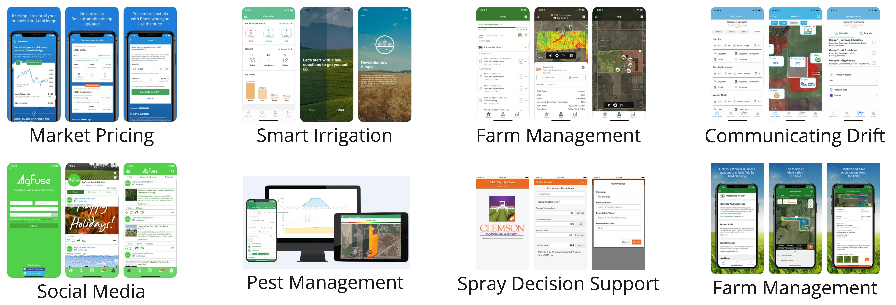

Introduction to Ag Informatics
Module 1, Lecture 1.1Ankita Raturi, ankita@purdue.edu
Fall 2021
Lecture Outline
- Introductions
- What is Agricultural Informatics?
- Genres of Software
- What will this course cover?
Intros
- Name
- Major, University
- Interests in (food & agriculture) x tech
The Digital Revolution in Agriculture

img src: Accenture, 2017
Challenges
- Handling in-field spatial variability
- Identifying weeds & pests
- Improving soil health quality
- Adaptive farm management
- Empowering stakeholders
- Enhancing food security
Explorations
- by sensing across scales
- via machine learning
- through geospatial analytics
- using realtime, site-specific data
- with decision-support tools
- by connecting people through tech
Software gives us the ability to
manage agricultural complexity across scales.
img src: Studio Ghibli, Laputa Castle in the Sky, 1986
Teasing apart Technology
Hardware
- Manipulate the world
- Manipulate reality
- Physical interactions
- Augment human action
Software
- Manipulate information
- Manipulate models
- Hypothetical interactions
- Augment human thought
predictive analytics, real-time monitoring, problem diagnosis, decision support, data driven insights, system-level analysis, communication, coordination, and collaboration
img src: PascalCrimson @ DeviantArt, Neo from Matrix, 2016
Agricultural Informatics
- Design, build, and use
- *digital technology*
- to enable
- *people* to...
- grow and distribute food,
- manage natural systems,
- coordinate and organize work, &
- strategize for food system resilience.
Genres of Software
- Data collection, management, and visualization tools
- Computer applications
- Mobile applications
- Websites and web applications
- Control systems
- Modeling and simulation tools
Essential Difficulties of Software
- Complexity
- No two systems are alike. Software has many possible states. Nonlinear increase in complexity. Math is hard. Management is difficult.
- How to represent the complex interplay between agricultural, social, environmental, and economic aspects of a farm?
- Conformity
- No unifying theories about goodness, correctness, usefulness.
- How to decide what elements of a farm to focus on in software?
- Changeability
- Software needs to be adapted. One change = dependencies galore. Maintenance is hard. Technology evolves. Humans change.
- Food and ag systems are dynamic and temporally complex. How to manage?
- Invisibility
- If a line of code fails in a computer and you don't get an error message, did anything break?
- Balance between visibility of farms and invisibility of, for instance, food flows.
"No Silver Bullet", Fred Brooks, 1986
Compounding Difficulties of Software in Agriculture

https://xkcd.com/1831/, Randall Munroe
Components of Software
| User Interface | view | HTML, CSS, Javascript |
| Controllers | logic | Javascript, Python |
| Data Access & Model | APIs, database |
Javascript, Python, SQL |
| Environment | web server | Linux, Node, Docker |
| Configurations | hosting, versioning |
Digital Ocean, Github |
| Meta | licenses, docs |
GNU GPL, markdown |
How It's Made: Ag Tech Software
Web Apps: FarmOS

- UI + logic: Drupal (PHP)
- Mobile UI: Vue.js
- Data: SQL database
- API available
- Environment: Docker available
- License: GNU GPL
- Docs & Versioning: Github
- Link: farmos.org
Mobile Apps: Row Crop Sampling
- IOS: Swift
- Android: Java
- Data: Some sort of database
- Environment: Cloud service provider
- License: Proprietary
- Docs & Versioning: Likely Github
IoT System: Water Sensor System
- Sensor-Gateway: C on Arduino
- Communication: LoRa + Hologram API
- Data: PostgreSQL database
- Dashboard: React.js
- Environment: Docker on Azure
- License: MIT
- Docs & Versioning: Github
- Link: precisionsustainableag.org
Modeling Tool: COMET-Farm
- UI: .NET, Javascript
- Logic: Daycent Model (FORTRAN, C, Perl)
- Data: Entity Framework
- Python API
- Environment: Google Cloud?
- License: Proprietary
- Docs & Versioning: Internal
- Link: comet-farm.com
AI & Robotics: EarthSense
- Device: Arduino likely with ROS (C/C++)
- UI: Android app (Java)
- Logic: Python with openCV/pytorch/etc
- Data: likely something noSQL
- Environment: Azure?
- License: Proprietary
- Docs & Versioning: Internal
- Link: earthsense.co
Activity: Genres of Software
In PAIRS
- Scribe: writes down the ideas on the appropriate sticky note and hands over to mapper.
- Mapper: places the sticky note on the wall. Try to cluster similar things together.
What types of software are used or needed in food and agricultural systems?
- Be specific! Either give an example, or describe the software itself.
- Use a YELLOW sticky note for EXISTING software
- Use a PINK sticky note for ideas you come up with for NEW software.
- Take a picture of the wall once you're done.
15 mins starts now.
Discussion
Each pair, tell us what you came up with.

What will this course cover?
Course Syllabus, Slides, Labs, & other via Github Repository:
https://github.com/ag-informatics/ag-informatics-course
Teaching Philosophy
Background on the Course
National Institute for Food and Agriculture Higher Education Challenge Grant
ASM 591: A work in progress. Please provide feedback via Github Issues, Slack Message, or just email/tell me!
Homework
Make sure you watch the videos for this week
https://github.com/ag-informatics/course-instructors/tree/main/module1Thursday's lecture is in-person and will cover skills building on the videos. Lab will include time for you to get started on the week's lab.
https://github.com/ag-informatics/ag-informatics-course/tree/main/module1/lab1.1- The quiz is due on Friday @ 5pm
https://purdue.brightspace.com
Questions?
License

Introduction to Agricultural Informatics Course by Ankita Raturi, Purdue University is licensed under a Creative Commons Attribution-NonCommercial-ShareAlike 4.0 International License.
- You are free to:
- Share — copy and redistribute the material in any medium or format
- Adapt — remix, transform, and build upon the material
- Under the following terms:
- Attribution — You must give appropriate credit, provide a link to the license, and indicate if changes were made. You may do so in any reasonable manner, but not in any way that suggests the licensor endorses you or your use.
- NonCommercial — You may not use the material for commercial purposes.
- ShareAlike — If you remix, transform, or build upon the material, you must distribute your contributions under the same license as the original.
- No additional restrictions — You may not apply legal terms or technological measures that legally restrict others from doing anything the license permits.